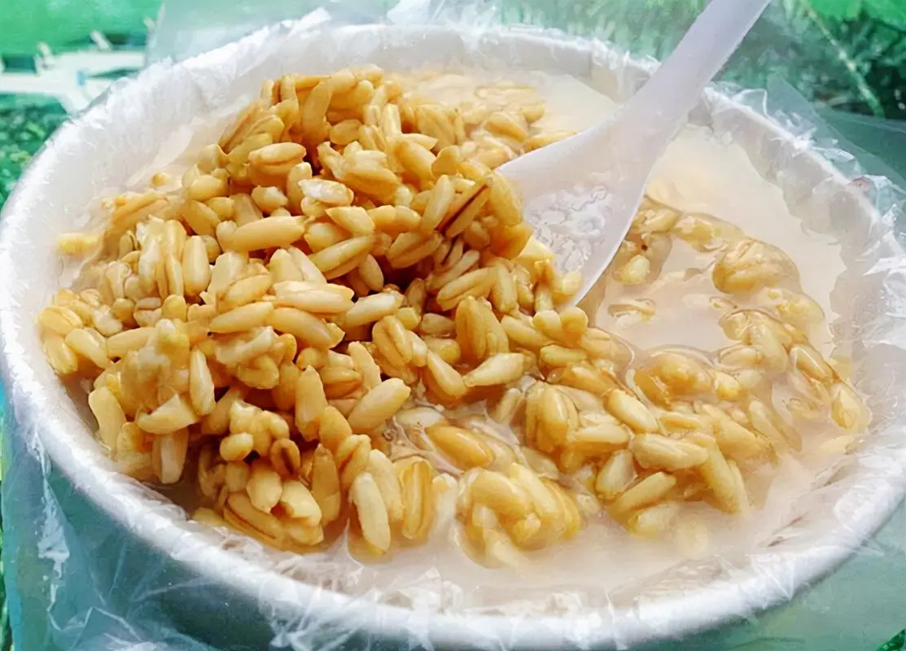
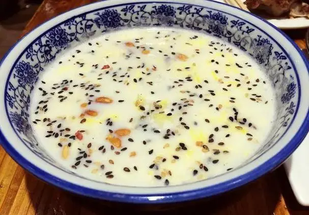

兰州，位于中国西北部的甘肃省，是黄河上游的重要城市。东临宁夏回族自治区，西接青海省，南邻四川省，北靠内蒙古自治区。黄河穿城而过，将城市分为南北两部分，形成了独特的河岸风光这座城市以其独特的地理位置和丰富的文化遗产而闻名。兰州不仅是丝绸之路的重要节点，还是著名的兰州拉面的发源地。
气候特点：兰州属于温带大陆性气候，四季分明，日照充足，冬季寒冷干燥，夏季炎热多雨。由于海拔较高，昼夜温差较大。
历史文化：兰州历史悠久，曾是古丝绸之路上的重镇。这里汇聚了多元的文化元素，包括汉文化、藏文化、伊斯兰文化等。兰州有许多历史遗迹和文化景点，如白塔山、五泉山、兰州水车博物馆等，都是了解当地历史文化的窗口。
经济发展：兰州是西北地区重要的工业基地，以石油化工、机械制造、有色金属加工等行业为主。同时，兰州也在积极发展高新技术产业和服务业，推动经济结构的转型升级。
旅游资源：兰州的旅游资源丰富多样，既有壮丽的自然风光，也有深厚的历史文化。游客可以游览黄河母亲雕塑，感受黄河的雄伟；参观甘肃省博物馆、敦煌博物馆等了解甘肃的历史文化；品尝正宗的兰州牛肉面，尝试手抓羊肉，体验当地的饮食文化。下面是一些著名旅游景点及美食介绍。
景点介绍：
- 白塔山公园：位于黄河北岸，因山顶有一座白色佛塔而得名。白塔山是兰州的标志性景点之一，登上白塔可以俯瞰整个兰州市区和黄河的壮丽景色。
- 兰州中山桥：又称“天下黄河第一桥”，是一座横跨黄河的古老桥梁，建于清朝末年，是兰州的地标性建筑之一。
- 兰州水车博览园：位于兰州市区，是一个展示古代水利文化和技术的专题博物馆。在这里，游客可以了解到兰州历史上水车的作用和制作工艺。
- 五泉山公园：位于兰州市区南部，是一个集自然风光和人文景观于一体的城市公园。公园内有五泉寺等历史建筑，环境幽静，是市民休闲的好去处。
- 黄河母亲雕像：位于兰州市区南滨河路，是一座象征黄河母亲的巨大雕塑，寓意黄河是中华民族的母亲河。
- 甘肃省博物馆：收藏有大量的甘肃地区文物，包括彩陶、青铜器、佛教艺术品等，是了解甘肃历史文化的重要场所。
- 天斧沙宫：位于兰州市郊外的榆中县，是一处以丹霞地貌著称的自然风景区，有着奇特的地质结构和美丽的自然风光。
美食介绍：



总的来说，兰州是一座融合了古老与现代、自然与人文的城市，无论是对于历史文化的探寻者，还是对于自然风光的欣赏者，都是一个值得一游的目的地。欢迎高考完的学子报考兰州高校。下面我提供了在兰州市路径导航页面和兰州高校基本信息简介。